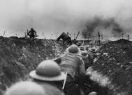
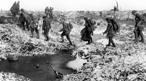

.jpg)
اَلْحَرْبُ ٱلْعَالَمِيَّةُ ٱلْأُوّلَىٰ، عُرفَتْ حينئذٍ بالْحَرِبِ ٱلْعُظْمَىٰ، هي حرب عالمية نشبت بدايةً في أوروبا من 28 يوليو 1914 وانتهت في 11 نوفمبر 1918. وُصِفتْ وقت حدوثها بـ«الحرب التي ستنهي كل الحروب». جُمِعَ لها أكثر من سبعين مليون فرد عسكري، 60 مليون منهم أوربِّيين، للمشاركة في واحدة من أكبر الحروب في التاريخ. لقي أكثر من تسعة ملايين مقاتل وسبعة ملايين مدني مصرعهم نتيجة الحرب، وتعتبر أيضًا عاملا مساهما في عدد من جرائم الإبادة الجماعية والإنفلونزا الإسبانية عام 1918، والتي تسببت في ما بين 50 و100 مليون حالة وفاة في جميع أنحاء العالم. تفاقم معدل الخسائر العسكرية بسبب التطور التقني والصناعي للمتحاربين، والركود التكتيكي الناجم عن حرب الخنادق القاسية. تعد هذه الحرب أحد أعنف الصراعات في التاريخ، وتسببت في التمهيد لتغييرات سياسية كبيرة تضمنت ثورات 1917–1923 في العديد من الدول المشتركة. ساهمت الصراعات غير المحلولة في نهاية النزاع في بداية الحرب العالمية الثانية بعد عشرين سنة. جمعت الحرب جميع القوى العظمى الاقتصادية في تحالفين متعارضين: قوات الحلفاء (الوفاق الثلاثي وهم المملكة المتحدة لبريطانيا العظمى وإيرلندا والجمهورية الفرنسية الثالثة والإمبراطورية الروسية) ضد دول المركز (الإمبراطورية الألمانية والإمبراطورية النمساوية المجرية والدولة العثمانية ومملكة بلغاريا). مع أن إيطاليا كانت من ضمن الحلف الثلاثي مع الإمبراطورية الألمانية والإمبراطورية النمساوية المجرية إلا أنها لم تنضم معهما في حلف دول المركز بسبب خرق الإمبراطورية النمساوية المجرية لشروط الحلف الثلاثي. تم إعادة تنظيم هذه التحالفات وتوسيعها مع دخول المزيد من الدول إلى الحرب: إيطاليا واليابان والولايات المتحدة انضموا إلى الحلفاء بينما انضمت الدولة العثمانية ومملكة بلغاريا لدول المركز. بين عامي 1908 و1914، كانت منطقة البلقان قد زُعزِع استقرارها بسبب مزيج من الدولة العثمانية الضعيفة وحروب البلقان 1912-1913 والأهداف الروسية والنمساوية المجرية المتنافسة. وفي يوم 28 يونيو 1914، قام القومي الصرب البوسني اليوغوسلافي غافريلو برينسيب باغتيال ولي عهد النمسا الأرشيدوق فرانتس فرديناند مع زوجته في سراييفو، ما أدى إلى نشوب أزمة يوليو. وفي 23 يوليو، أصدرت النمسا-المجر إنذارا نهائيا إلى صربيا. وسرعان ما استقطبت التحالفات المتشابكة جميع القوى الأوروبية الرئيسية مع الإمبراطوريات الاستعمارية الخاصة بها، وانتشر الصراع بسرعة في جميع أنحاء العالم. أصدرت الحكومة الروسية في 25 يوليو أوامر «لفترة التحضير للحرب». وبعد قصف النمسا-المجر للعاصمة الصربية بلغراد يوم 28، تمت الموافقة على التعبئة الجزئية من المناطق العسكرية الأقرب إلى النمسا، بما في ذلك كييف وكازان وأوديسا وموسكو. تم الإعلان عن تعبئة روسية عامة مساء 30 يوليو. وفي 31، فعلت النمسا-المجر وألمانيا الشيء نفسه، في حين طلبت ألمانيا من روسيا تسريح في غضون 12 ساعة. عندما فشلت روسيا في الامتثال، أعلنت ألمانيا الحرب في 1 أغسطس، وتبعتها النمسا-المجر في يوم 6. أمرت فرنسا بالتعبئة الكاملة لدعم روسيا في 2 أغسطس. الدخول الفرنسي في الحرب جاء رغبةً في استعادة مقاطعتي الألزاس واللورين التي تنازلت عنها بعد الحرب الفرنسية-البروسية 1870-1871، والقلق من قوة ألمانيا المتزايدة والالتزامات العسكرية المتفق عليها مع روسيا. كانت الاستراتيجية الألمانية للحرب على جبهتين ضد فرنسا وروسيا هي تركيز الجزء الأكبر من جيشها في الغرب على هزيمة فرنسا في غضون أربعة أسابيع، ثم تحويل القوات إلى الشرق قبل أن تتمكن روسيا من التعبئة بالكامل؛ هذه ستعرف لاحقاً بخطة شليفن. في 2 أغسطس، طالبت ألمانيا بالمرور الحر عبر بلجيكا، وهو عنصر أساسي في تحقيق انتصار سريع على فرنسا. عندما تم رفض ذلك، دخلت القوات الألمانية بلجيكا في وقت مبكر من صباح 3 أغسطس وأعلنت الحرب على فرنسا في نفس اليوم. استخدمت الحكومة البلجيكية معاهدة لندن (1839) وامتثالاً لالتزاماتها بموجب المعاهدة، أعلنت بريطانيا الحرب على ألمانيا في 4 أغسطس. وفي 12 أغسطس، أعلنت بريطانيا وفرنسا الحرب على النمسا-المجر. وفي 23، انضمت الإمبراطورية اليابانية إلى قوات الحلفاء، واغتنمت الفرصة لتوسيع دائرة نفوذها من خلال الاستيلاء على الممتلكات الألمانية في الصين ومنطقة المحيط الهادئ. في 24 أغسطس، حققت صربيا انتصار كبير على النمسا-المجر في معركة سير. توقف التقدم الألماني إلى فرنسا في معركة مارن وبحلول نهاية عام 1914، استقرت الجبهة الغربية على معركة استنزاف تميزت بسلسلة طويلة من خطوط الخنادق التي تغيرت قليلاً حتى عام 1917. على الجبهة الشرقية، دخل جيشان روسيان شرق بروسيا في 17 أغسطس، امتثالا لاتفاقهما مع فرنسا عام 1912 لمهاجمة ألمانيا خلال 15 يومًا من التعبئة. أجبر الألمان على تحويل قوات من الغرب، لكنهم نجحوا في صد هذا الغزو بانتصارات في تانينبرغ وبحيرات ماسوريان. ومع ذلك احتل الروس مقاطعة غاليسيا الشرقية في النمسا والمجر. في نوفمبر 1914، انضمت الدولة العثمانية إلى دول المركز، وفتحت جبهات في القوقاز وبلاد الرافدين وشبه جزيرة سيناء. في عام 1915، انضمت إيطاليا إلى دول الحلفاء وانضمت بلغاريا إلى دول المركز. انضمت رومانيا إلى قوات الحلفاء في عام 1916. وبعد غرق سبع سفن تجارية أمريكية بواسطة غواصات ألمانية، والكشف عن أن الألمان كانوا يحاولون تحريض المكسيك على شن حرب على الولايات المتحدة، أعلنت الولايات المتحدة الحرب على ألمانيا في 6 أبريل 1917. انهارت المقاومة العسكرية الروسية، مما سمح بنقل أعداد كبيرة من القوات الألمانية إلى الجبهة الغربية. وفي أبريل 1918 وقعت روسيا على معاهدة برست ليتوفسك مع القوى المركزية لتخرج من الحرب. أنهت ثورة فبراير 1917 في روسيا الحكم الاستبدادي القيصري وجاءت بالحكومة المؤقتة، لكن استمرار السخط الشعبي على ثمن الحرب أدى إلى ثورة أكتوبر وإنشاء الجمهورية السوفياتية الاشتراكية. كان الهجوم الألماني في مارس 1918 ناجحًا في البداية ولكن الحلفاء احتشدوا ودفعوهم مرة أخرى إلى التراجع في هجوم المائة يوم؛ في 28 سبتمبر، طلب قادة الجيش الألماني الهدنة. في 4 نوفمبر 1918 وافقت الإمبراطورية النمساوية المجرية على هدنة فيلا غوستي. ومع حدوث ثورة في الداخل وعدم رغبة الجيش في الاستمرار بالقتال، تخلى القيصر فيلهلم عن العرش الألماني في 9 نوفمبر، كما وقعت ألمانيا أيضًا هدنة في 11 نوفمبر 1918، والتي عرفت فيما بعد بهدنة كومبين الأولى. نتيجة للحرب استبدلت الإمبراطوريات الروسية والألمانية والنمساوية المجرية والعثمانية بدول جديدة قائمة على القوميات. فرضت القوى الأربع بريطانيا وفرنسا والولايات المتحدة وإيطاليا شروطها في سلسلة من المعاهدات المتفق عليها في مؤتمر باريس للسلام عام 1919. كان الهدف من تشكيل عصبة الأمم هو منع حرب عالمية أخرى، ولكن لأسباب مختلفة فشلت في القيام بذلك. الشروط القاسية التي فرضتها معاهدة فرساي على ألمانيا ساهمت في صعود الحزب النازي ونشوب الحرب العالمية الثانية. غيرت الحرب العظمى أجزاء كبيرة من أوروبا والشرق الأوسط بطرق لها تبعات باقية إلى اليوم.
| المجموعة | دول المحور | ضد | دول الحلفاء |
|---|---|---|---|
| 1 | الامبراطورية النمساوية المجارية | صربيا | |
| 2 | ألمانيا | الامبراطورية الروسية | |
| 3 | إيطاليا1 | فرنسا | |
| 4 | الدولة العثمانية | بلجيكا | |
| 5 | بلغاريا | بريطانيا العظمى | |
| 6 | ... | إيطاليا2 | |
| 7 | ... | الولايات المتحدة الأمريكية |
المعارك الأكثر أهمية في الحرب العالمية الأولى

.jpg)
.jpg)
.jpg)

أسرى الحرب
أثناء الحرب استسلم حوالي ثمانية ملايين من الرجال ووُضعوا في معسكرات لأسرى الحرب. لقد تعهدت جميع الدول بتنفيذ اتفاقيتا لاهاي بشأن المعاملة العادلة لأسرى الحرب. وعمومًا فقد كانت معدلات الحياة في معسكرات أسرى الحرب أعلى بكثير من أقرانهم في الجبهة. كان حول المعسكر أسلاك شائكة بطول ثلاثة أمتار وكانت الأسلاك متباعدة خمسة عشر سنتيمترات، وعمود خشبي في كل ثلاثة أمتار وبجانب الأسلاك الشائكة كل خمسين سنتيمتر لتُشكل بذلك شبكة لايمكن عبورها. في عام 1915 سُجن الأسرى من الضباط في مُخيمات خاصة بهم، وبحلول أكتوبر عام 1918 وصل عدد معسكرات الضباط إلى 73 مُعسكر. سجناء نمساويين مجريين في معسكر لأسرى الحرب في روسيا، 1915 بلغ عدد الجنود الألمان المسجونين إلى أكثر بقليل من سبعة ملايين. بينما وصل عدد الجنود الأسرى من قوات الحلفاء اللذين قُبض عليهم الألمان إلى حوالي 2,400,000، في حصار موبيج استسلم 40,000 جندي فرنسي، وفي معركة غاليسيا أخذ الروس مابين 100,000 إلى 120,000 من الرهائن النمساويين. في هجوم بروسيلوف استسلم مابين 325,000 إلى 417,000 من الجنود الألمان والنمساويين للقوات الروسية. في معركة تاننبرغ استسلم 92,000 من الجنود الروس للقوات المنتصرة. عندما تم حصار كاوناس في عام 1915 أصبح 20,000 من الجنود الروس سُجناء. وفي معركة كانت بالقرب من Przasnysz (فبراير– مارس 1915) استسلم 14,000 من الألمان إلى الروس. في معركة المارن الأولى استسلم 12,000 ألماني إلى قوات الحُلفاء. 25–31% هي خسارة الروس (من المُعتقلين، الجرحى والقتلى) كان عدد سجنائها كالتالي؛ 32% عند النمسا والمجر، 26% لإيطاليا، 12% لفرنسا، 9% لألمانيا و7% لبريطانيا. بلغ مجموع سُجناء دول الحُلفاء 1.4 مليون سجين. ذكرت بعض الأبحاث أن عدد السُجناء الروس كان 2,417,000 رجل، ومن دول المركز حوالي 3.3 مليون رجل، كانوا قد استسلموا للقوات الروسية. هندي مصاب بالهُزال تابع للقوات البريطانية وهو أحد الناجين من حصار الكوت. كان في قبضة ألمانيا 2.5 مليون سجين وروسيا كان لديها 2.2–2.9 مليون سجين، بينما كان لدى بريطانيا وفرنسا 720,000 سجين. كان مُعظم السُجناء قد أُلقي القبض عليهم أثناء الهُدنة. أمَّا الولايات المتحدة ففي قبضتها 48,000 سجين. كانت هناك لحظات خطيرة يتلقَّاها الجنود المستسلمين وهو إطلاق الرصاص عليهم حتى بعد استسلامهم. كانت الظُروف مُرضية لسجناء المُعسكر (وهي أفضل بكثير من ظروف السجناء في الحرب العالمية الثانية) بسبب جهود اللجنة الدولية للصليب الأحمر وعمليات التفتيش التي تقوم بها الدول المُحايدة للمُعسكرات. ومع ذلك فقد كانت الظروف مروعة في روسيا؛ فقد كان الموت جوعًا شائع بين السجناء والمدنيين، مات حوالي 15–20% من السجناء في روسيا (بعض التقارير الأخرى تقول 2.5% هو نسبة موتى السجناء بسبب المجاعة). وفي دول المركز حكم على 8% من السجناء الروس بالسجن المؤبد. أما في ألمانيا فقد كان الطعام نادر ومات 5% من السجناء. عاملت الدولة العثمانية الأسرى في كثير من الأحيان معاملةً سيئة، كان 11,800 من جنود الإمبراطورية البريطانية مُعظمهم من الهنود اللذين تم أسرهم في شهر أبريل 1916 بعد حصار الكوت في بلاد الرافدين، مات منهم 4,250 في معسكرات الأسر. مع أن العديد منهم كانوا في حالة سيئة حينما أُسروا إلا أن الضباط العُثمانيين قد أجبروهم على المسير 1,100 كيلومتر (684 ميل) إلى الأناضول. وقد قال أحد الناجين منهم: «كنَّا نسير جنبًا إلى جنب كالبهائم، ولانتوقف إلا للموت». بعد ذلك أُجبر الناجين منهم على العمل في بناء خط سكة حديدية من خلال جبال طوروس. في حين أن سجناء الحُلفاء لدى دول المركز قد أُرسلوا إلى منازلهم بعد انتهاء الأعمال العدائية، إلا أنه لم يُمنح سجناء دول المركز لدى الحُلفاء وروسيا نفس هذه المعاملة، فقد أُجبر العديد منهم على العمل القسري؛ مثل العمل في فرنسا إلى عام 1920. ولم يُفرج عنهم إلا بعد اتصالات عديدة قام بها الصليب الأحمر للمجلس الأعلى لقوات الحُلفاء. بقي السُجناء الألمان مسجونون في روسيا إلى عام 1924.
.jpg)
.jpg)